Write the Docs Salary Survey 2020 Results¶
Introduction¶
The Write the Docs Salary Survey aims to gather data about salaries for documentarians across the world, to help our community members determine what appropriate salary ranges are, and to provide a benchmark for future negotiations.
In the second annual survey, which was open from mid-August until mid-November 2020, we incorporated community feedback from the first survey and revised the wording of some questions to reduce ambiguity. We expanded the scope to better cater for independent contractors, people who were currently out of work, and multiple currencies, and also added a section about the impact of the COVID-19 pandemic.
805 people completed the survey in 2020, an increase of 24% over 2019.
This year, while our respondents specified the currency they were paid in, all numbers in this report have been converted to US dollars for ease of comparison, and the actual exchange rate used has been noted.
Feedback¶
We’d love your thoughts on this survey, so that we can continue to refine it over the years. You can email us at support@writethedocs.org with your ideas.
Section 1: Employment Parameters¶
In this section, we asked about the parameters of the respondent’s employment:
- whether they were employees, self-employed, or had been employed or self-employed but were currently not working,
- the number of hours they worked and the length of time they had held the same position,
- whether they worked solo or as part of a team and how they classified their role, and
- how focused their role was on tasks related to documentation.
Basis of Employment¶
What we asked
- What is the basis of your employment?
- I am an employee
- I am an independent contractor, freelance operator, or self-employed
- I was an employee, but am not currently employed
- I was an independent contractor, freelance operator, or self-employed, but do not currently have work
In 2019, respondents were asked if they were employees or independent operators (contractors, freelancers, self-employed). In 2020, we included new options for those who were not currently working at the time of taking the survey. These respondents were asked to answer the questions as if they were still in their previous employment or contract situation, and their data is included in this report as such.
18 employees and 2 independent contractors filled out the survey on this basis, or 2.5% of all respondents.
The ratios of employees to independent contractors stayed almost identical: 93% of respondents were employees (versus 94% in 2019) while the remaining 7% (versus 6% in 2019) were independent contractors, freelance operators or self-employed.
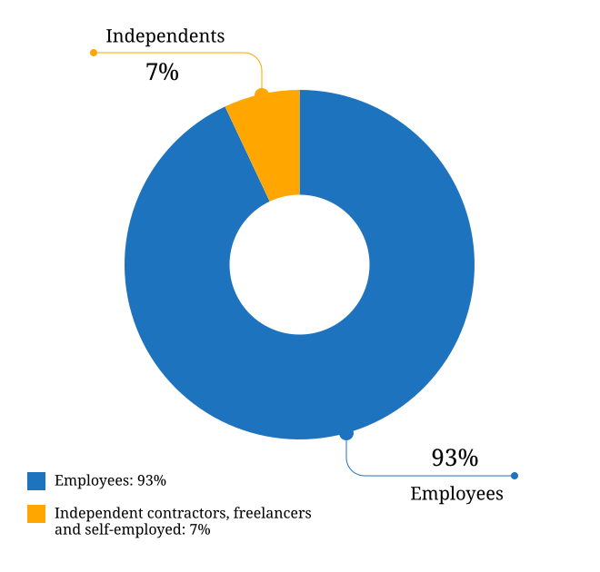
Figure: Basis of Employment¶
Hours Worked¶
What we asked
- How many hours per week do you work?
Note for independent contractors, freelance operators, and the self-employed: Please enter an average across all clients/jobs that you work for in a typical week.
- 1-20 hours
- 21-30 hours
- 31-40 hours
- 41-50 hours
- 51-60 hours
- More than 60 hours
As in 2019, most respondents worked “full-time” hours:
- 95.5% worked 31 hours per week or more,
- 38.4% reported working between 41 and 50 hours, and
- 3% reported between 51 and 60 hours.
Of the 4.5% working part-time:
- 1.6% worked up to 20 hours, and
- 2.9% worked between 21 and 30 hours.
3 respondents reported working over 60 hours per week: the highest entered value was a staggering 80 hours. In contrast, the highest reported number from 2019 was 60 hours, reported by 4 respondents.
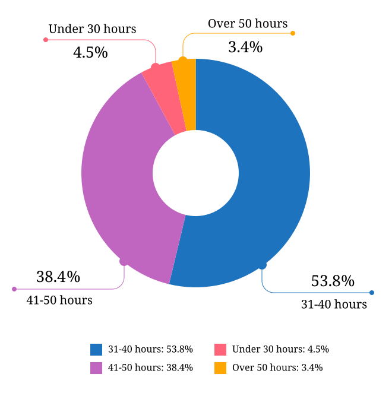
Figure: Hours Worked¶
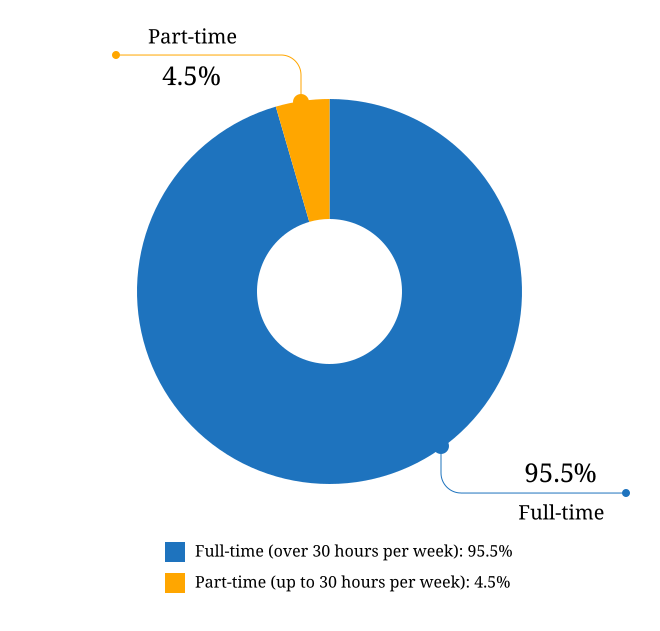
Figure: Full-time vs Part-time¶
Job Title¶
What we asked
- What is your job title?
Note: To help us process this information, please use full terms rather than abbreviations. For example, use “Senior” rather than “Sr” and “Technical” rather than “Tech”.
With typos removed, capitalization standardized, and abbreviations expanded, 255 distinct job titles were entered as responses to this question (versus 207 in 2019). Only one respondent did not provide a valid job title.
The most common job title entered was “Technical Writer”, making up 33% of all respondents - but nearly double that (63% of respondents) entered job titles that included that phrase.
| Job Title | % of total |
|---|---|
| Technical Writer | 33.17% |
| Senior Technical Writer | 16.89% |
| Principal Technical Writer | 2.11% |
| Lead Technical Writer | 1.99% |
| Staff Technical Writer | 1.49% |
| Information Developer | 1.12% |
| Technical Writer II | 0.99% |
| Junior Technical Writer | 0.99% |
| Documentation Manager | 0.99% |
| Senior Information Developer | 0.87% |
| Job Title | % of total |
|---|---|
| Information Developer | 4.43% |
| Documentation Manager | 3.94% |
| Senior Information Developer | 3.45% |
| Documentation Engineer | 2.96% |
| Project Manager | 2.46% |
| Senior Content Developer | 1.97% |
| Instructional Designer | 1.97% |
| Knowledge Manager | 1.97% |
| Content Developer | 1.48% |
| Information Architect | 1.48% |
Figure: Job Title Terms¶
Type of Role¶
What we asked
- How would you broadly categorize your primary role?
Note: If you are a team leader or manager but also work alongside your team, please select the category of your team.
- I am a writer, content creator, producer, or editor
- I am a developer or an engineer
- I am an educator
- I work in a customer support role
- I am an advocate or work in community outreach
- I work in marketing
- I work primarily in a management role
- Other (please specify)
- In your primary role, are you:
Note: If you are a contractor or freelancer, this would apply to the typical kind of job that you are brought on for.
- A solo worker
- Part of a team (either of people doing the same kind of role, or a mixed-discipline team)
- Part of multiple teams
- A manager or team leader
- Other (please specify)
In 2019, we attempted to illustrate the range of roles in the community by analyzing job titles and grouping them by keyword. In 2020, we went straight to the source and asked respondents to broadly categorize their role themselves.
The majority of respondents (87.7%) placed themselves primarily in the writer/creator/producer/editor role, with management coming in next at 4.8% followed by developer/engineer at 3.4%.
Support, educator, advocate/community outreach and marketing each had single digit representation. 20 respondents (2.5%) chose “Other” and entered a different categorization: these included information architecture, analysis, content strategy, knowledge management and product management.
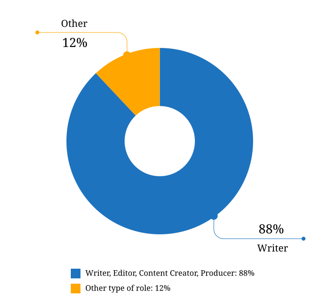
Figure: Role Categorization - Major Grouping¶
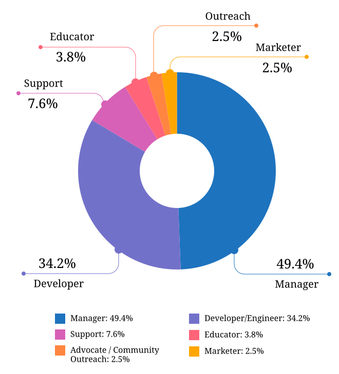
Figure: Role Categorization - Minor Grouping (excluding writer/creator/editor)¶
Respondents were further asked to indicate if they worked primarily solo, as part of a team (either a team made up of people doing the same kind of job, or a multi-disciplinary team), as part of multiple teams, or as a manager or team leader.
- 16.3% of respondents indicated that they work solo, a decrease from 2019 (where nearly 30% reported working alone),
- 52.9% worked on a single team,
- 17% on multiple teams, and
- 13.3% lead a team.
4 respondents selected “Other” and entered more information: 3 of these were special cases but essentially each worked as part of a team or multiple teams, while the final case indicated a solo role.
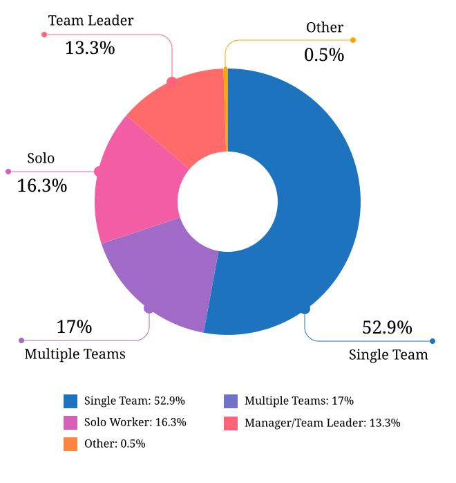
Figure: Team Breakdown¶
Length of time at current organization¶
What we asked
- How long have you worked at your current organization?
Note: Please select the length of time for your position at your current organization only - your total years of experience in documentation will be covered in the individual demographics section.
If you are a contractor or freelance operator, please select the length of time that you have been contracting or freelancing.
- Less than 1 year
- 1 - 2 years
- 2 - 5 years
- 5 - 10 years
- More than 10 years
Due to ambiguous wording, this question caused some confusion in 2019 with some respondents possibly entering the length of time they had been working in documentation (which is covered in the demographics section) rather than the amount of time working with their current employer. Improved wording and additional clarification this year cleared this up.
Up until the 5 year mark, the numbers were split quite evenly:
- 26% of respondents had been in their current role for less than one year,
- 26.2% for between 1 and 2 years, and
- 29.2% for between 2 and 5 years - accounting for 81.3% of the total.
13.2% had been with their current employer for between 5 and 10 years, and the remaining 5.5% (44 individual respondents) for more than 10 years.
Of those respondents who had been with their current employer for more than 10 years,
- 61% reported between 11 and 15 years,
- 10 individual respondents indicated 20 years or more - 7 of these had clocked up either 20 or 21 years, and
- single respondents each reported 23 years, 27 years, and 28 years.
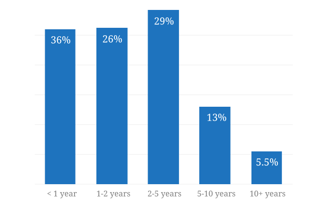
Figure: Years in Current Role¶
Section 2: Work Location and COVID-19¶
In 2019, we included one question about work location: whether the respondent worked on site, remotely, or a combination of the two; the possible responses were arranged to also show if the work location was stipulated by the employer or the individual’s own choice.
We found that 56% of respondents worked completely on site, more than half of them by choice, and 17% worked completely remotely, three quarters of them by choice. The remaining 27% split their time between onsite and remote work.
In 2020, the COVID-19 pandemic caused huge upheavals in the way that we work, particularly with regard to work location, so this question was converted into a whole new section.
Work Location¶
What we asked
9. Has your work location (i.e. onsite, remote) been affected by COVID-19 (temporarily or permanently)?
- Yes
- No
The following questions (9a-9d) were shown to respondents who answered “yes”:
9a. Before COVID-19, what was your work location?
- I was required to be on-site full time
- I was on-site full time, but it was not required
- I was partially on-site, and partially remote
- I was fully remote, but it was by choice (i.e. an office location was available to me)
- I was fully remote, and it was required (i.e. no office location was available to me)
9b. Since COVID-19, what is your work location?
- I am required to be on-site full time
- I am on-site full time, but it is not required
- I am partially on-site, and partially remote
- I am fully remote, but it is by choice (i.e. an office location is available to me)
- I am fully remote, and it is required (i.e. no office location is available to me)
9c. Do you expect your work location change to be permanent?
- Yes
- No
- Probably yes
- Probably no
- I do not know
9d. How do you feel about the change to your work location?
- Very negative
- Negative
- Neutral
- Positive
- Very positive
The following questions (9e-9f) were shown to respondents who answered “no” to question 9:
9e. What is your work location?
- I am required to be on-site full time
- I am on-site full time, but it is not required
- I am partially on-site, and partially remote
- I am fully remote, but it is by choice (i.e. an office location is available to me)
- I am fully remote, and it is required (i.e. no office location is available to me)
9f. How do you feel about your work location?
- Very negative
- Negative
- Neutral
- Positive
- Very positive
Work Location Changes due to COVID-19¶
80% of respondents said that their work location had changed, either permanently or temporarily, due to COVID-19.
Note: a small number of respondents answered “yes” to the question of whether their work location had changed due to COVID-19, but then selected the same option for work location before and after/since the pandemic. These responses were filtered out of the table below but not out of the rest of the figures for this section, as we assumed that “yes, things have changed” was the significant response, and the options presented for remote and onsite work perhaps did not account for all the subtleties of work location that are possible.
Overwhelmingly and unsurprisingly, the bulk of the changes reported are from working on-site to working remote.
Of those reporting changes, nearly half (48.5%) had previously been required to be on-site. Of those respondents, 50% were now required to be remote, 35% were given the option to work remotely, and another 11.5% were now partially onsite and partially remote. Only 3% were now working onsite.
| Pre-COVID-19 | Post-COVID-19 | % of Total |
|---|---|---|
| Onsite - required | Remote - required | 25.69% |
| Onsite - required | Remote - not required | 17.89% |
| Partial | Remote - required | 15.94% |
| Onsite - not required | Remote - required | 12.36% |
| Partial | Remote - not required | 8.62% |
| Onsite - not required | Remote - not required | 7.48% |
| Onsite - required | Partial | 5.86% |
| Onsite - not required | Partial | 2.6% |
| Remote - not required | Remote - required | 2.11% |
| Other | 1.46% |
Respondents who indicated that they had experienced a work location change due to COVID-19 were asked if they thought that the changes would be permanent or temporary, and also how they felt about the change.
Opinions on the permanency of the changes were quite evenly spread - however those who predicted “no” (25.4%) or “probably no” (22.2%) - a combined 47.6% - outweighed those that predicted “yes” (13.2%) or “probably yes” (22.9%) - a combined 36.1%.
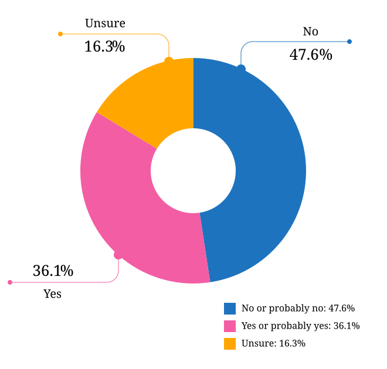
Figure: Predicted Permanency of Work Location Changes¶
While other aspects of living through a pandemic might be challenging, a large proportion of respondents reported finding a silver lining in work location changes. More than 60% of respondents reported feeling “positive” (34.11%) or “very positive” (26.51%) about the change, 27.29% felt “neutral”, and only 12.09% reported feeling “negative” (11.47%) or “very negative” (0.62%, or 4 individuals).
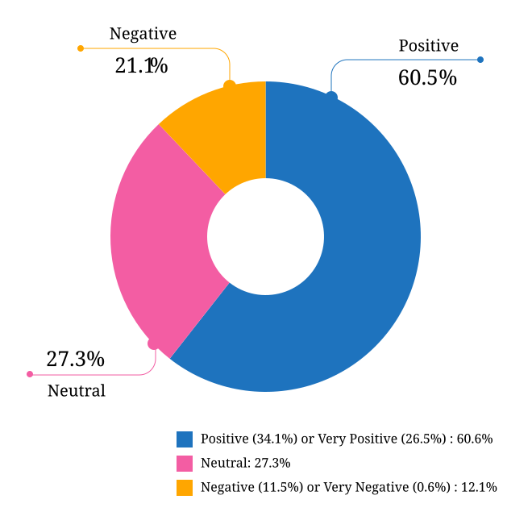
Figure: Feelings About Work Location Change¶
Work Location Unchanged¶
Of those respondents (20%) who indicated that their work location had not changed due to COVID-19, 45% were required to be remote, 38.7% were remote by choice, and 6.3% were partially onsite and partially remote. Only 10% (16 individuals) worked onsite, either by choice (5%) or necessity (5%).
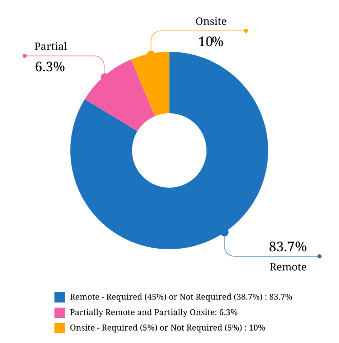
Figure: Work Location (unchanged since COVID-19)¶
In response to their feelings about their work location, of the 83.8% that worked remotely, 67.9% reported feeling “very positive” and 24.6% reported “positive”. 10 individuals (7.5%) were “neutral” about their work location, and no remote workers in this group felt at all negative about the situation.
Similarly, no negativity was reported from the 16 respondents in this group who worked on-site. Half of the on-site workers felt “very positive” and the other half were split between “positive” and “neutral”. In fact, only 1 respondent - from the “partially remote, partially onsite” segment - reported feeling “negative” about their work location, and no one reported feeling “very negative”.
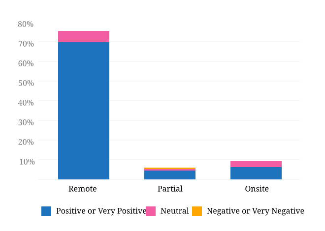
Figure: Feelings about Work Location (where work location is unchanged since COVID-19)¶
Overall Work Location¶
Combining the results for respondents whose work location has changed with those whose location has not gives a snapshot of the work location of the whole community, both before the pandemic started and in the latter half of 2020.
What comes out is - again, unsurprisingly - a complete reversal: prior to the pandemic, more than half of respondents (58.26%) worked in offices, but since COVID-19 that number has shrunk to only 3.6%. Remote workers made up 20.62% of the pre-COVID-19 workforce; whereas the pandemic has moved 87.7% of workers to remote.
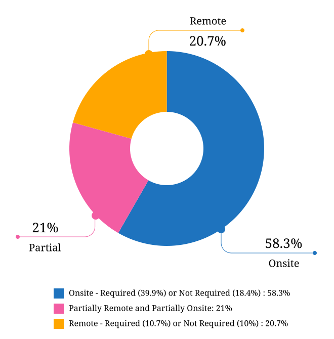
Figure: Pre-COVID-19 Work Location - Overall¶
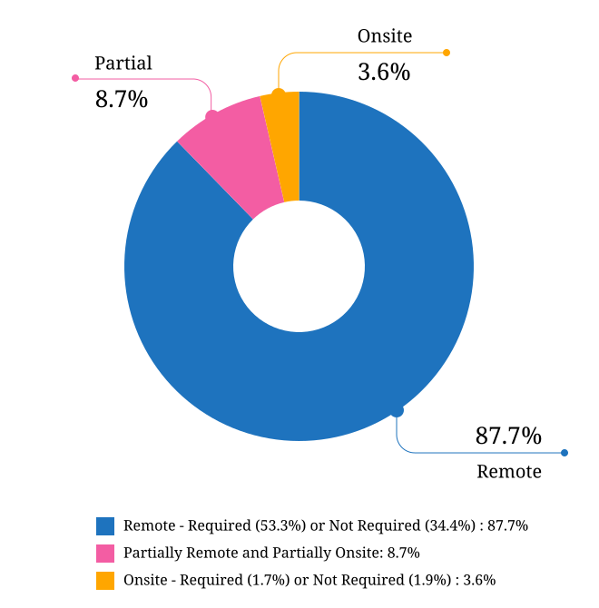
Figure: Post-COVID-19 Work Location - Overall¶
Other Changes Due to COVID-19¶
What we asked
10. Other than work location, has your employment been affected by COVID-19? Check all that apply.
Note: If your employment has not been affected, please check “none of the above”.
If you have changed jobs since the pandemic started, please only choose “I changed roles” if COVID-19 was a factor in this change.
- Social distancing measures have been introduced in my workplace (masks, distance between desks, maximum people in a room, online meetings only etc)
- My hours have changed
- I was furloughed
- I was laid off
- I changed roles (within the same organization)
- I changed roles (started work with a different organization)
- Other (please specify)
- None of the above
- 11.8% of respondents reported that their work situation had not been affected by COVID-19 in any way,
- 36.4% said that social distancing measures had been introduced in the workplace,
- 10.2% had their hours changed,
- 2.5% were furloughed,
- 3.9% were laid off,
- 9.2% of respondents moved to a new role in a new organization as a result of the pandemic, and
- 2.7% changed roles within the same organization.
| Change | % of Total |
|---|---|
| Work Location | 80.1% |
| Social Distancing | 36.4% |
| Hours Changed | 10.2% |
| Changed Role (new organization) | 9.2% |
| Laid Off | 3.9% |
| Changed Role (same organization) | 2.7% |
| Furloughed | 2.5% |
8.9% of respondents gave additional information about other changes they had experienced. These included:
Changes related to salary and benefits:
- Salary cuts - both permanent and temporary
- Raises and bonuses postponed or cancelled
- Benefits reduced (e.g. 401k matching, commuting benefits)
- Salaries paid late
Changes related to workload:
- Reductions in the amount of work available
- Increased workload
- Increased overtime
- More time required for people and project management
- Increased oversight on productivity and time tracking
Changes related to personnel:
- Hiring freezes and upcoming contracts cancelled
- Team reorganizations and company restructures
Changes related to travel and events:
- Work travel cancelled
- In-person training, workshops, summits etc cancelled or shifted online
Some respondents called out positive changes: remote workers in companies who felt disadvantaged compared to their onsite colleagues found the playing field levelled as everyone was forced to work from home; others found themselves growing professionally as they took on new responsibilities. Several reported being able to get more done in their new work location, although missing social interaction with colleagues was seen as a downside by some.
Section 3: Salary Information¶
In 2019, as well as the all-important salary figure and a list of benefits, we asked for the respondent’s level of satisfaction with their salary and job, and if relevant, their reasons for dissatisfaction.
Upon reviewing the responses, it became apparent that we had over-simplified a complex concept. Level of satisfaction with salary and level of satisfaction with a job overall are often separate and distinct - it is entirely possible to be extremely satisfied with every aspect of a position other than the salary, and the reverse can also be true.
In 2020, we separated these two aspects - salary satisfaction and overall job satisfaction - as well as providing a new section designed for contractors, freelancers and independent operators with different options for payment models (hourly rates, daily rates etc). Respondents (both employees and independent contractors) were also able to specify the currency that they were paid in.
Salary - Employees¶
What we asked
11a. What currency are you paid in?
- United States Dollar (USD)
- Euro (EUR)
- Canadian Dollar (CAD)
- Australian Dollar (AUD)
- New Zealand Dollar (NZD)
- British Pound Sterling (GBP)
- Other (please specify)
11c. What is your yearly salary, before tax and without any additional benefits?
Note: Please do not include the currency symbol or any decimal places. Commas can be used for digit grouping in the US/UK style (eg 50,000).
Example: Person A receives $4,000 take home pay each month, but an additional 30% is automatically withheld by their employer for income tax. Person A would enter 62,400 below (monthly amount multiplied by 12, plus 30%).
Notes¶
As over 95% of respondents reporting working between 30 and 80 hours per week - a “full time” role - those reporting fewer than 30 hours have been omitted from the figures in this section.
While the survey specifically requested annual salary, a number of respondents entered monthly salary. Where it was obvious that this is what had occurred, the numbers were multiplied by 12 for the result sets. There were 4 individual results where we could not be certain if the salary figure was monthly or if a currency notation error had been made, so these results were omitted from this section.
The following figures are therefore based on a reduced result set of 729 full-time employees.
Overall Median Salary - Employees¶
The median salary across all regions, before tax and any additional benefits, was USD $80,000 (meaning half of the respondents earned more, and half earned less).
This figure does not take into account the socio-economic situation in the countries of the very highest earners (the top 10 salaries were all from the United States) and the very lowest (the bottom 10 salaries were from Asia and South America) - as well as the difference between the country of the employee and the country of the employer. Figures grouped into regions make a more useful baseline from which to determine what constitutes a “fair” salary.
| Region | Sub-region | No. | Median Salary (USD) |
|---|---|---|---|
| North America | 397 | 98,000 | |
| USA | 348 | 103,250 | |
| Canada | 49 | 61,600 | |
| Europe | 181 | 50,250 | |
| UK | 34 | 78,154 | |
| Germany | 20 | 71,400 | |
| Poland | 28 | 29,430 | |
| Russia | 12 | 20,085 | |
| Oceania | 42 | 80,290 | |
| Asia | 43 | 19,600 | |
| India | 30 | 19,600 | |
| South America | 16 | 12,122 | |
| Israel | 47 | 90,000 |
| Region | Sub-region | No. | Median Salary (USD) |
|---|---|---|---|
| North America | 379 | 92,000 | |
| USA | 351 | 95,000 | |
| Canada | 28 | 56,980 | |
| Multinational | 145 | 83,080 | |
| Europe | 114 | 48,106 | |
| UK | 24 | 74,839 | |
| Germany | 14 | 59,143 | |
| Poland | 12 | 30,510 | |
| France | 12 | 52,717 | |
| Oceania | 23 | 70,300 | |
| Asia | 26 | 23,100 | |
| India | 15 | 19,600 | |
| South America | 11 | 10,830 | |
| Israel | 30 | 91,800 |
Note: median figures are not broken out for countries with fewer than 10 responses.
Currencies¶
Respondents reported being paid in a total of 31 different currencies. Where the location country of the respondent and the location country of the employer organization were different, in most cases the respondent was paid in the currency of their location country (possibly for legal reasons, in many cases). There were 21 individual exceptions to this rule, with some respondents located in Ukraine, Romania, Serbia, Belarus, Canada, Argentina, Vietnam and Colombia being paid in the currency of their employer’s country.
The exact exchange rates used to convert the salary figures to USD are listed in the table below.
| Currency | Code | No. | Rate |
|---|---|---|---|
| United States Dollar | USD | 370 | 1 |
| Euro | EUR | 77 | 1.19 |
| New Israeli Sheqel | ILS | 47 | 0.3 |
| Canadian Dollar | CAD | 46 | 0.77 |
| Australian Dollar | AUD | 40 | 0.74 |
| Great Britain Pound | GBP | 34 | 1.34 |
| Indian Rupee | INR | 30 | 0.014 |
| Polish Zloty | PLN | 28 | 0.27 |
| Brazilian Real | BRL | 14 | 0.19 |
| Russian Ruble | RUB | 10 | 0.013 |
| Swedish Krona | SEK | 5 | 0.12 |
| Czech Koruna | CZK | 3 | 0.046 |
| Romanian Leu | RON | 3 | 0.24 |
| New Zealand Dollar | NZD | 2 | 0.7 |
| Rand | ZAR | 2 | 0.066 |
| Korean Wan | KRW | 2 | 0.0009 |
| Indonesian Rupiah | IDR | 2 | 0.000071 |
| New Taiwan Dollar | TWD | 1 | 0.035 |
| Ukrainian Hryvnia | UAH | 1 | 0.035 |
| Kenyan Shilling | KES | 1 | 0.0091 |
| Philippine Peso | PHP | 1 | 0.021 |
| Japanese Yen | JPY | 1 | 0.0096 |
| Norwegian Krone | NOK | 1 | 0.11 |
| Hong Kong Dollar | HKD | 1 | 0.13 |
| Pakistan Rupee | PKR | 1 | 0.0063 |
| Hungarian Forint | HUF | 1 | 0.0033 |
| Mexican Peso | MXN | 1 | 0.05 |
| Croatian Kuna | HRK | 1 | 0.16 |
| Bangladeshi Taka | BDT | 1 | 0.012 |
| Swiss Franc | CHF | 1 | 1.1 |
| Danish Krone | DKK | 1 | 0.16 |
Additional Benefits - Employees¶
What we asked
12. Does your salary package include any additional benefits? Check all that apply.
- Paid vacation time (in excess of government-mandated minimums)
- Health insurance (in excess of government-mandated minimums)
- Pension, superannuation, or retirement fund (in excess of any government-mandated minimums)
- Stocks, shares, stock options, or equity
- Commission payments
- Bonus payments
- Professional development / ongoing education / conference budget
- Meals, meal vouchers, or food-related benefits
- Gym, fitness, sport, or other wellness-related benefits
- Other types of insurance e.g. life insurance, accident insurance, income protection insurance
- Paid parental leave (in excess of government-mandated minimum)
- Time off or bonuses for community-related activities
- Unlimited PTO (paid/personal time off)
- None of the above
- Other (please specify)
For this section, we included the respondents with ambiguous salary numbers that were excluded from the salary section, and also included those working fewer than 30 hours per week - bringing the total number to 750, or all respondents who identified as employees.
In 2019, this section caused some debate due to the differences in labor laws in different countries: in almost all countries apart from the US, employees are entitled to paid vacation time and paid sick leave by law, and many also mandate pension contributions and/or paid parental leave. Similarly, many countries have universal health care, negating the need for employer-provided health cover. To make this clearer, in 2020 we asked respondents to only check the boxes for vacation time, health insurance, pension plans and parental leave if their employee benefit was in excess of what was required by law in the country where they live.
| Benefit | % of Total |
|---|---|
| Health insurance * | 75.60% |
| Paid vacation time * | 70.90% |
| Professional development / ongoing education / conference budget | 51.90% |
| Bonus/Commission payments | 49.40% |
| Pension, superannuation, or retirement fund * | 48.80% |
| Other types of insurance e.g. life insurance, accident insurance, income protection insurance | 45.30% |
| Stocks, shares, stock options, or equity | 44.90% |
| Gym, fitness, sport, or other wellness-related benefits | 40.50% |
| Paid parental leave * | 37.47% |
| Meals, meal vouchers, or food-related benefits | 32.50% |
| Time off or bonuses for community-related activities | 27.73% |
| Unlimited PTO (paid/personal time off) | 21.87% |
| None | 3.20% |
* In excess of any government-mandated minimums
Of the respondents who chose “other” and entered details of their additional benefits, most could be mapped to one of the existing categories. The ones that could not (and which were mentioned by more than one respondent) included:
- Transportation benefits - including company vehicle and public transport passes or reimbursements
- Co-working or home office budget
- Phone and internet cost reimbursement
Salary Satisfaction - Employees¶
What we asked
- How satisfied are you with your current salary and benefits?
- Very unsatisfied
- Unsatisfied
- Neutral
- Satisfied
- Very satisfied
On the whole, most employee respondents were satisfied (40.27%) or very satisfied (31.87%) with their salary and benefits. Those with neutral feelings made up 17.2% of employees, with those that were unsatisfied (8.8%) or very unsatisfied (1.87%) in the minority.
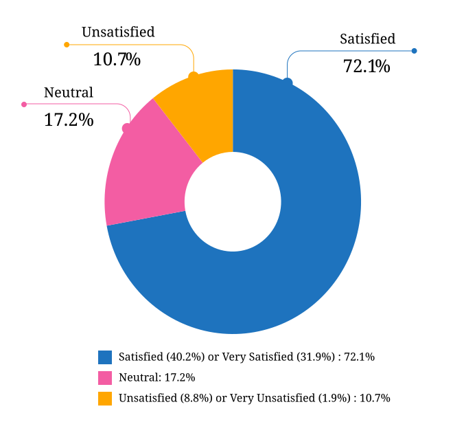
Figure: Salary Satisfaction (Employees)¶
Reasons for Salary Dissatisfaction - Employees¶
What we asked
13b. If you are not completely satisfied with your salary or benefits, is it because (check all that apply, or check “none of the above”):
- Salary is too low
- Benefits are missing or insufficient
- Discrepancy between salary and cost of living in my area
- Unfair or inconsistent salary across similar roles in my organization
- I work too many hours
- I don’t work enough hours
- Responsibilities exceed pay grade
- Other (please specify)
- None of the above
Of the respondents who indicated that they were not “very satisfied” with their salary and/or benefits, 127 did not specify a reason.
| Reason | % of dissatisfied |
|---|---|
| Salary is too low | 36.99% |
| Responsibilities exceed pay grade | 26.61% |
| Benefits missing or insufficient | 19.96% |
| Unfair or inconsistent salary across similar roles in my organization | 17.03% |
| Discrepancy between salary and cost of living in my area | 13.89% |
| I work too many hours | 9.39% |
| I don’t work enough hours | 0.78% |
Job Satisfaction - Employees¶
What we asked
- How satisfied are you with your current job overall?
- Very unsatisfied
- Unsatisfied
- Neutral
- Satisfied
- Very satisfied
Three quarters of respondents were “satisfied” (45.73%) or “very satisfied” (29.6%) with their job overall. 16.53% indicated “neutral” feelings, with less than 10% indicating they were “unsatisfied” (6.27%) or “very unsatisfied” (1.87%, or 14 individuals).
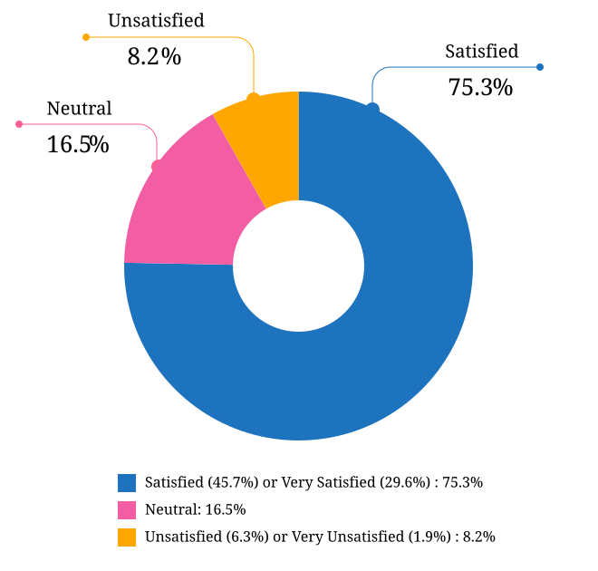
Figure: Overall Job Satisfaction (Employees)¶
Reasons for Overall Job Dissatisfaction - Employees¶
What we asked
14b. If you are not completely satisfied with your job, is it because (check all that apply, or check “none of the above”):
- My workload is too high
- My workload is too low
- There is too much stress or pressure
- The work is not interesting or challenging enough
- Role is undervalued or underfunded
- No opportunities for advancement
- Unsupportive work environment
- Insufficient opportunities for professional development
- Outdated toolset
- Management not open to change
- No opportunity for remote work
- I don’t feel supported as a remote worker
- I don’t feel respected
- I am discriminated against on the basis of gender
- I am discriminated against on the basis of race or nationality
- I am discriminated against on the basis of age
- I am discriminated against on the basis of education level
- Other (please specify)
- None of the above
19 respondents - including 2 who indicated that they were “very unsatisfied” with their overall job situation - did not indicate a reason for dissatisfaction.
| Reason | % of dissatisfied |
|---|---|
| Role is undervalued or underfunded | 46.02% |
| No opportunities for advancement | 27.65% |
| My workload is too high | 24.81% |
| The work is not interesting or challenging enough | 22.16% |
| There is too much stress or pressure | 21.59% |
| Insufficient opportunities for professional development | 21.4% |
| Outdated toolset | 20.27% |
| Management not open to change | 16.29% |
| I don’t feel respected | 15.15% |
| Unsupportive work environment | 12.69% |
| My workload is too low | 3.98% |
| I don’t feel supported as a remote worker | 3.98% |
| No opportunity for remote work | 3.41% |
| I am discriminated against on the basis of gender | 3.03% |
| I am discriminated against on the basis of age | 2.84% |
| I am discriminated against on the basis of race or nationality | 0.76% |
| I am discriminated against on the basis of education level | 0.38% |
Of the respondents who chose “Other” and provided detail, the common themes were:
- Too many meetings or bureaucratic overhead
- Frustration with competency of team members or management
- Bullying and/or harassment
- Instability (both related to COVID-19 and general)
- Politics within the organization
Salary - Independent Contractors, Freelancers, and Self-Employed¶
Due to the low number of responses and danger of exposing identifiable data, salary data for independent contractors, freelancers and the self-employed could not be calculated in the same way as for employees. Data for this section will be released in a report update once it has been processed.
Section 4: Organization Demographics¶
Some issues with clarity of questions in this section in the 2019 survey meant that much of the data was not particularly useful. For 2020, we re-worded the questions and added additional notes.
Contractors were asked to answer this section based either on their main client or contract, or their typical client or contract.
Organization Size¶
What we asked
15. What is the approximate size of your organization, in number of employees?
- Less than 10
- 10 - 50
- 50 - 100
- 100 - 1000
- 1000 - 10,000
- 10,000 - 100,000
- More than 100,000
Very small operations of 1-10 employees only represented just 1.4% of the total (11 responses). 10-50 employee operations accounted for another 7.8%, with the 50-100 employee bracket next at 9.7%.
The next option, 100-1000 employees, had the largest number of responses at 35%, and another 24.2% went to organizations made up of 1,000-10,000 employees. 10,000-100,000 employee operations employed 12.4% of respondents, and the largest bracket, over 100,000 employees, accounted for the final 9.4%.
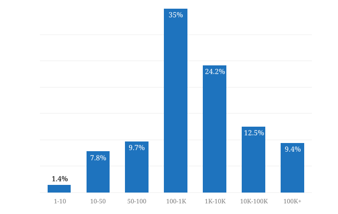
Figure: Organization Size (number of employees)¶
Industry¶
What we asked
- What industry does your organization operate in?
Note: for software development and IT companies: Please choose the industry that your product or service primarily serves.
For example, if your organization produces e-learning software, select “Education, Training”. If you work for a company that makes point of sale systems for restaurants, select “Food, Beverages”.
Please only select “Software Development, Software Development Tools” if your organization’s customers are software developers.
- Advertising, Marketing
- Agriculture
- Airlines, Aerospace, Defense, Military
- Automotive
- Business Support, Professional Services, Sales, Consulting
- Construction, Machinery, Homes
- Education, Training
- Entertainment, Leisure, Gaming
- Finance, Banking, Financial Services, Financial Technology
- Food, Beverages
- Government
- Healthcare, Medical, Pharmaceuticals, Biotechnology
- Insurance
- Legal Services
- Manufacturing, Hardware
- Media, Radio, TV, Journalism
- Non-profit, Community
- Retail, Consumer Products
- Real Estate
- Science, Research
- Security
- Software Development, Software Development Tools (not industry-specific)
- Telecommunications, Technology, Internet, Electronics
- Transportation, Delivery, Logistics, GPS, Mapping
- Travel, Hotels
- Utilities, Energy, Mining, Extraction
The notes for this question clarified that respondents who work in IT and software should choose the industry that their organization services, after some confusion around this question in our 2019 survey. While IT and software still accounted for the largest share of responses - 36.3% - the spread of other industries gave a clearer picture of the range of organizations employing documentarians in our community.
Telecommunications came in next at 15.2%, followed by Finance at 8.3%. The next set of industries - Health, Professional Services, Security, Advertising, Manufacturing, and Retail - each made up between 2% and 5% of responses.
Education, Transport, Aerospace/Defence, Entertainment, Government, Automotive, Construction and Utilities each accounted for between 10 and 15 responses each. Travel, Food, Science, Insurance, Non-Profit, Media, Real Estate, Agriculture and Legal were selected by under 10 respondents each.
The “Other” category was selected by 37 respondents. In all cases, the entered field could be mapped to one of the categories listed.
| Industry | % of Total |
|---|---|
| Software Development, Software Development Tools (not industry-specific) | 38.63% |
| Telecommunications, Technology, Internet, Electronics | 15.28% |
| Finance, Banking, Financial Services, Financial Technology | 8.45% |
| Healthcare, Medical, Pharmaceuticals, Biotechnology | 4.60% |
| Business Support, Professional Services, Sales, Consulting | 3.98% |
| Security | 3.35% |
| Manufacturing, Hardware | 2.73% |
| Retail, Consumer Products | 2.73% |
| Education, Training | 1.86% |
| Transportation, Delivery, Logistics, GPS, Mapping | 1.86% |
| Airlines, Aerospace, Defense, Military | 1.74% |
| Entertainment, Leisure, Gaming | 1.49% |
| Automotive | 1.37% |
| Government | 1.37% |
| Utilities, Energy, Mining, Extraction | 1.37% |
| Construction, Machinery, Homes | 1.24% |
| Travel, Hotels | 0.87% |
| Food, Beverages | 0.62% |
| Insurance | 0.62% |
| Non-profit, Community | 0.62% |
| Science, Research | 0.62% |
| Media, Radio, TV, Journalism | 0.50% |
| Other | 0.50% |
| Real Estate | 0.37% |
| Agriculture | 0.25% |
| Legal Services | 0.12% |
Organization Location¶
What we asked
- Where is your organization based?*
Note: This is the primary location of the organization that you work for. The location where you live will be covered in the next section.
- Country
- State, Province, Territory or Region, if applicable
- City
Respondents were asked to select the primary geographical location of the organization that they work for.
The US accounted for 46.6% of the responses, the largest share. Second after that was “Multi-national or global organization” with 20%.
37 other countries made up the remaining 33.4%. Israel (4.2%), Canada (3.8%), United Kingdom (3.2%), Australia (2.9%) and India (2.4%) held the highest share. Each of the other 31 countries listed accounted for less than 2% of the total.
Section 5: Respondent Demographics¶
Age¶
What we asked
What is your age?
- 18-25
- 26-35
- 36-45
- 46-55
- 56-65
- 66+
- I’d rather not say
The two largest-represented age groups (26-35 year olds and 36-45 year olds) combined formed 64% of the total respondents. 46-55 year olds made up 19.8%, and 56-65 year olds another 9.4%.
The youngest age bracket took 5.7% of the total and the oldest bracket (66+ years) took 0.6% or 5 individuals (there were no respondents in this group in 2019).
2 respondents chose not to answer this question.
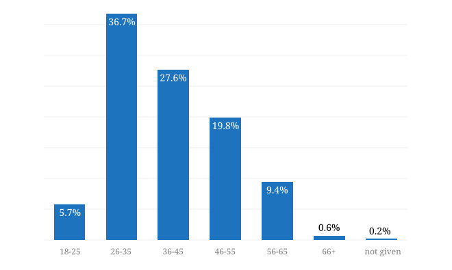
Figure: Age Group of Respondents¶
Gender Identity¶
What we asked
- What gender identity do you most identify with?
- Woman
- Man
- Non-binary
- Other (please specify)
- I’d rather not say
57.8% of respondents identified as women, 37.5% as men, and 2.4% as non-binary or “other” - a similar breakdown to 2019’s results. 19 respondents (2.4% of the total) chose not to answer.
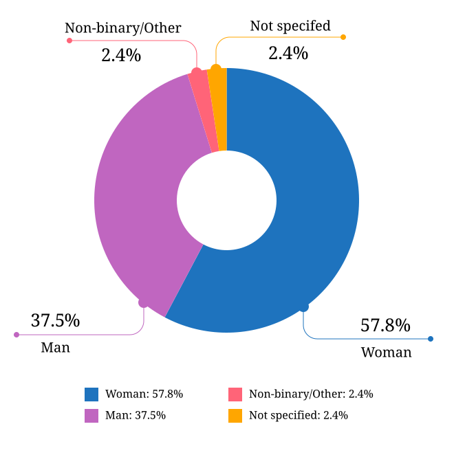
Figure: Gender Identity¶
Years of Experience in Documentation¶
What we asked
- How many years of experience do you have in documentation?
- Less than 1 year
- 1 - 2 years
- 2 - 5 years
- 5 - 10 years
- More than 10 years
- I’d rather not say
Those who selected “More than 10 years” were asked to specify an exact number.
3.5% reported having up to a year of experience, and 7% between 1 and 2 years. 23.9% fell into the 2-5 years of experience bracket, and 25.5% had 5-10 years under their belts.
The largest group was those with over 10 years of experience, just under 40% of respondents. Of these, 198 reported between 10 and 20 years, 100 reported between 20 and 30 years, and 23 reported over 30 years - 7 of which were veterans of over 40 years. The highest reported value was 44 years (1 respondent).
3 respondents chose not to answer this question.
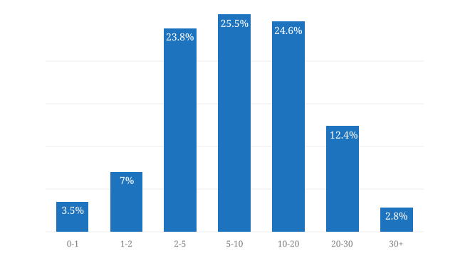
Figure: Years of Experience in Documentation¶
Highest Education Level Achieved¶
What we asked
- What is the highest level of education that you have completed?
- High School or equivalent
- Technical College Qualification or equivalent
- College or University Graduate Qualification (Certificate, Diploma, Associate Degree, Bachelor’s Degree)
- Post-Graduate Degree (Master’s Degree, Post-Graduate Diploma or Certificate, Doctorate)
- Other (please specify)
- I’d rather not say
The majority of respondents - 93.3% had completed a college or university graduate qualification or higher - 54% had a graduate qualification (Certificate, Diploma, Associate Degree, or Bachelor’s Degree) and 39% had completed a post-graduate qualification (Master’s Degree, Post-Graduate Diploma or Certificate, or Doctorate). Those completing technical college or equivalent numbered 2.2%, and those completing high school only (including those who did some tertiary education but did not achieve a formal qualification) accounted for 4% of respondents, and technical college 2.2%.
The responses entered for “Other” resulted in a new category being added for those that are still currently studying: 2 respondents indicated that they are currently working towards a degree.
2 respondents chose not to answer this question.
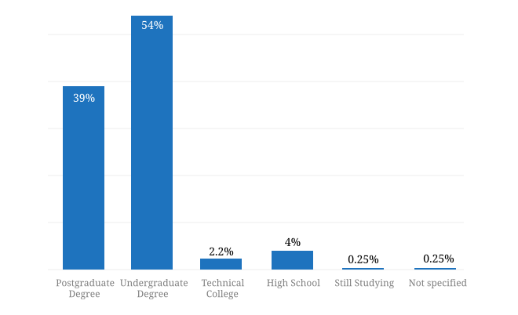
Figure: Highest Education Level Completed¶
Geographical Location¶
What we asked
22a. Where are you based?
- Country
- State, Province, Territory, or Region
- City
In 2019, 58% of survey respondents who provided a location were based in the United States. As the Write the Docs community is international, one of our aims for 2020 was to try and expand the reach of the survey to documentarians in more countries, in order to make the results more comprehensive.
In 2020, we had some success with this: while the number of US residents increased slightly (373 individuals versus 350 in 2019), this only made up 46% of the total number of responses, meaning that the 24% increase in total survey reach was largely from our international community.
While the number of respondents from Canada and Germany decreased, there were significant increases in responses from Australia, Brazil, India, Israel, Poland and Ukraine.
No responses were recorded in 2020 from Bulgaria, Greece, Iceland, Italy, Malaysia, Nepal, Singapore or Slovakia - all of which were represented in 2019. Bangladesh, Belarus, Colombia, Hong Kong, Indonesia, Kenya, Mexico, Pakistan, South Africa, South Korea and Switzerland appeared as new countries in the result set.
| Country | State/Province | City | No. |
|---|---|---|---|
| United States | 373 | ||
| California | 102 | ||
| San Francisco | 23 | ||
| Texas | 39 | ||
| Austin | 19 | ||
| Dallas | 10 | ||
| Oregon | 24 | ||
| Portland | 20 | ||
| Washington | 23 | ||
| Seattle | 18 | ||
| Massachusetts | 20 | ||
| Canada | 54 | ||
| Ontario | 30 | ||
| Toronto | 13 | ||
| British Columbia | 13 | ||
| Vancouver | 7 |
| Country | City | No. |
|---|---|---|
| United Kingdom | 37 | |
| London | 16 | |
| Poland | 33 | |
| Kraków | 11 | |
| Wrocław | 9 | |
| Germany | 23 | |
| Berlin | 10 | |
| France | 15 | |
| Ukraine | 15 | |
| Kyiv | 8 | |
| Russia | 12 | |
| Netherlands | 11 | |
| Spain | 9 | |
| Ireland | 8 |
| Region | Country | City | No. |
|---|---|---|---|
| Middle East | Israel | 52 | |
| Tel Aviv | 17 | ||
| Asia | 50 | ||
| India | 35 | ||
| Oceania | 48 | ||
| Australia | 45 | ||
| Brisbane | 16 | ||
| Melbourne | 15 | ||
| South and Central America | 17 | ||
| Brazil | 14 | ||
| Africa | 3 |